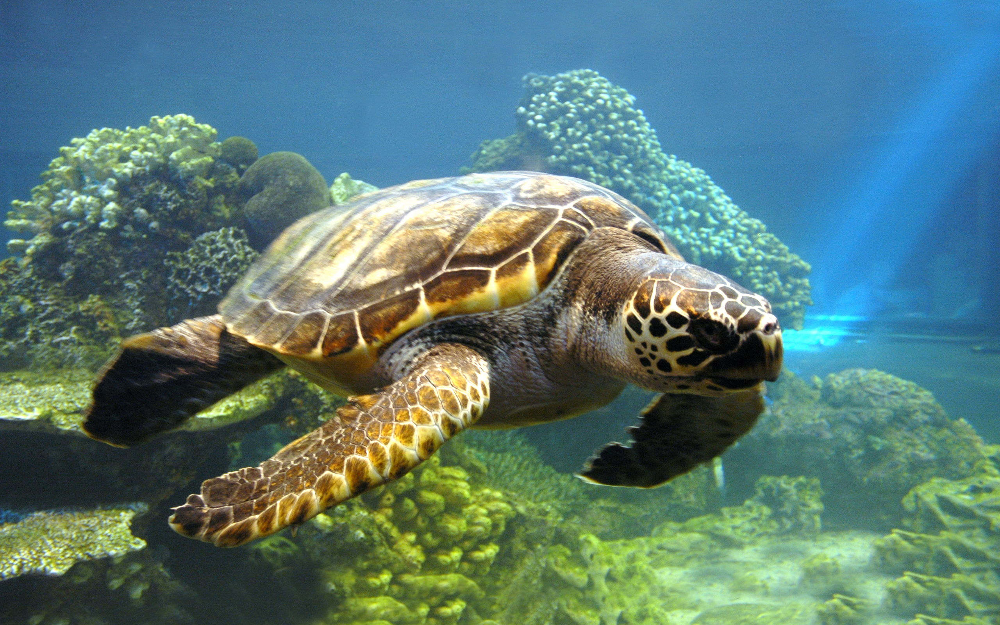

Misión
Proteger playas, rescatar animales heridos y difundir prácticas responsables para que cada persona se convierta en un guardián del mar.
Free Turtles nació para responder a una necesidad urgente: proteger nuestros espacios costeros y rescatar la fauna marina más vulnerable. La bitácora de nuestro proyecto señala claramente que la ONG debe tener una identidad definida, enfocada en problemas ambientales, valores sólidos y un mensaje cercano a la comunidad.
Trabajamos con vecinos, escuelas y empresas locales para generar acciones concretas que unen voluntariado, educación y conservación.


Proteger playas, rescatar animales heridos y difundir prácticas responsables para que cada persona se convierta en un guardián del mar.
Lograr una costa más limpia y segura donde la naturaleza y la comunidad trabajen juntas para preservar el futuro de las especies marinas.
Construir vínculos reales entre las personas y el ambiente, apoyando proyectos que promuevan la educación, el rescate y la rehabilitación.
Compartimos resultados, objetivos y necesidades reales con la comunidad.
Creemos en el trabajo conjunto entre personas, instituciones y empresas.
Protegemos la biodiversidad y cuidamos el entorno natural con responsabilidad.
Pasamos de la reflexión a la práctica a través de proyectos reales.